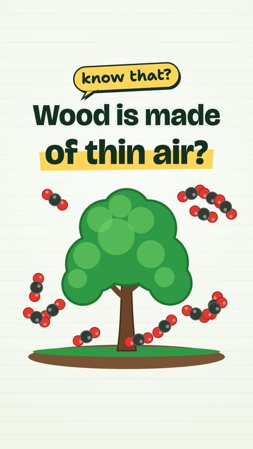
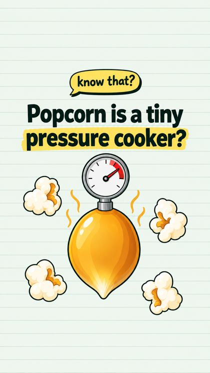
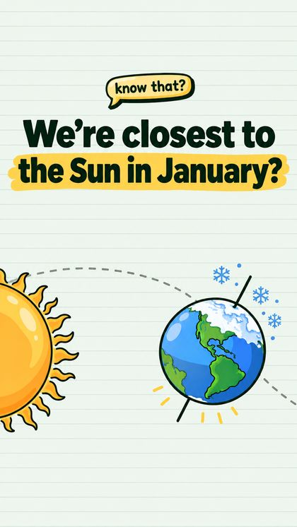
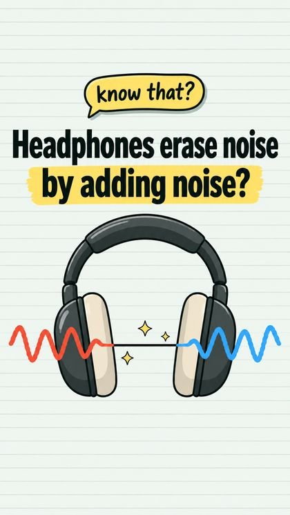
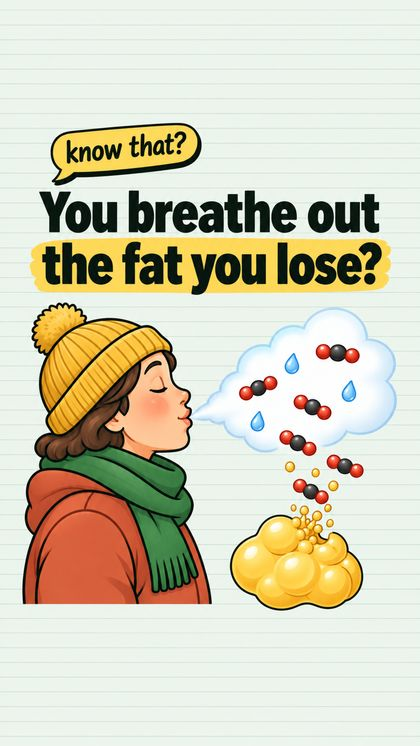
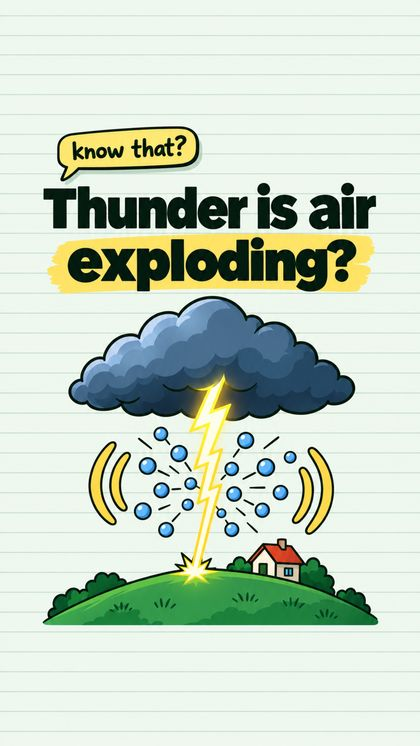

The surprising science behind everyday things, in about a minute. Our kids pick the questions. We find the answers.
Know That? is a Shorts channel: vertical videos of a minute or so, each one built around a single fact that sounds wrong until you see why it's right. A tree is made mostly of thin air. Popcorn is a tiny pressure cooker. We're closest to the Sun in January. When you lose fat, you mostly breathe it out.
Every episode opens on the question — “Know that…?” — inside the first breath, animates the reason in plain pictures, and ends on “Did you know that?”, which loops straight back into the opening. Notebook paper, a yellow speech bubble, and nothing on screen that isn't helping you get it.
The questions come from my kids. That's the point of the whole thing: a channel they can feel some ownership over — they pitch the ideas, see them turn into something real, watch the numbers move, and get an early, low-stakes feel for how the online world actually works. It's also for friends and family, and for anyone who likes a good “wait, really?”
I'm the taste gate. The bar for an episode is one question: is the fact genuinely surprising? A snail out-racing the electrons in a wire is true, and it got made, and I killed it anyway — it just wasn't interesting enough. Nothing posts without me watching the finished cut first.






No intro, no “smash that subscribe.” The question lands in the first second, the answer is drawn rather than lectured, and the last line hands you back to the first.
Every script is fact-checked before a frame is drawn. A surprising fact that turns out to be a myth is worse than no episode at all.
Episodes are produced and posted by Burrow, my automation driver. It does the work; I approve the exact cut that goes out.
Same handle everywhere, same episodes.
Got a question that sounds wrong but isn't? That's the whole submission process.